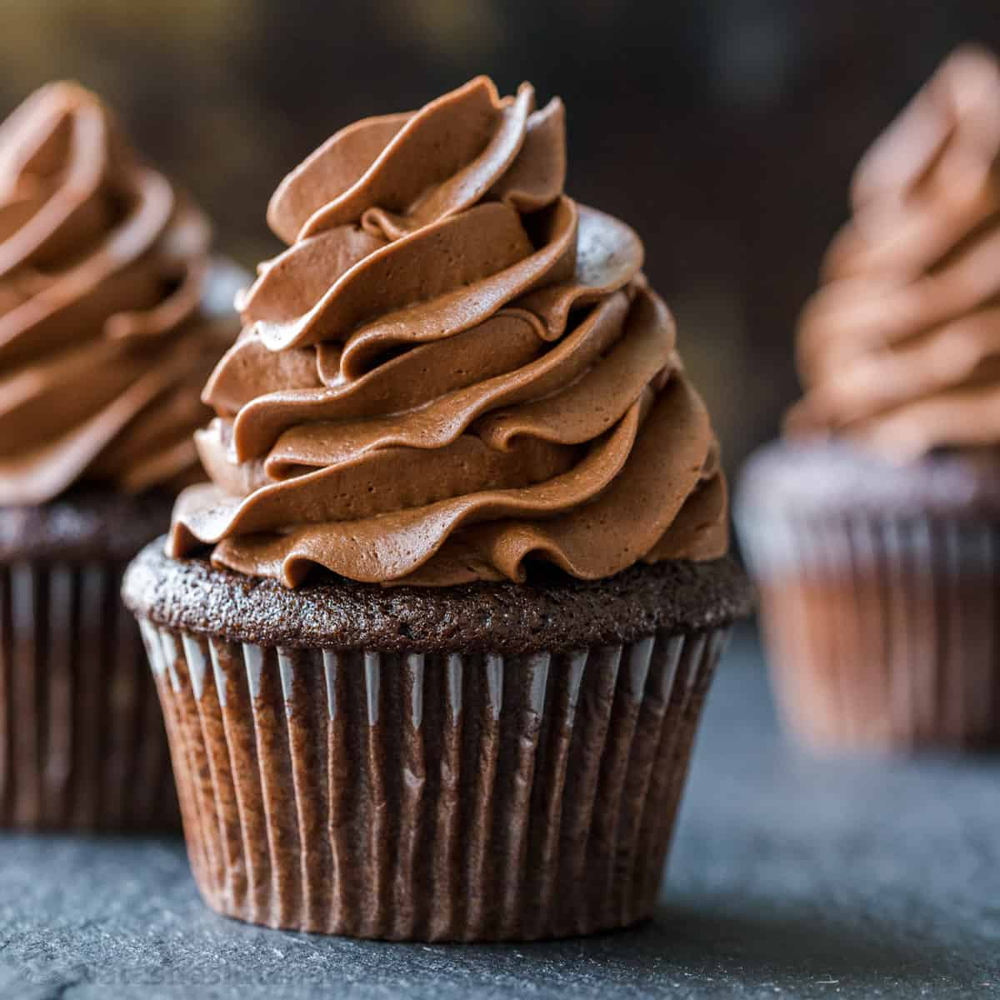

Chocolate Cupcakes

These chocolate cupcakes are moist and bursting with rich, chocolaty flavor — and they're so easy to make.
You can frost these delicious cupcakes with buttercream or cream cheese frosting.
Ingredients:
- 0.75 cup cocoa powder
- 1.3 cup all-purpose flour
- 1.5 cup sugar
- 3 tbp butter
- 0.75 tsp vanilla
- 2 eggs
- 1 cup milk
- 2 tsp baking powder
- 0.25 tsp baking soda
- Pinch of salt
Steps:
- Preheat the oven to 350 degrees F (175 degrees C). Line a muffin pan with paper or foil liners.
- Sift together flour, cocoa, baking powder, baking soda, and salt.
- Cream together sugar and butter in a large bowl until light and fluffy. Add eggs, one at a time, beating well after each addition. Stir in the vanilla. Add flour mixture in two batches, alternating with milk; beat well. Spoon batter into the prepared muffin cups, filling each 3/4 full.
- Bake in the preheated oven until a toothpick inserted into the centers comes out clean, 15 to 17 minutes. Remove from the oven and let cool before serving or frosting.